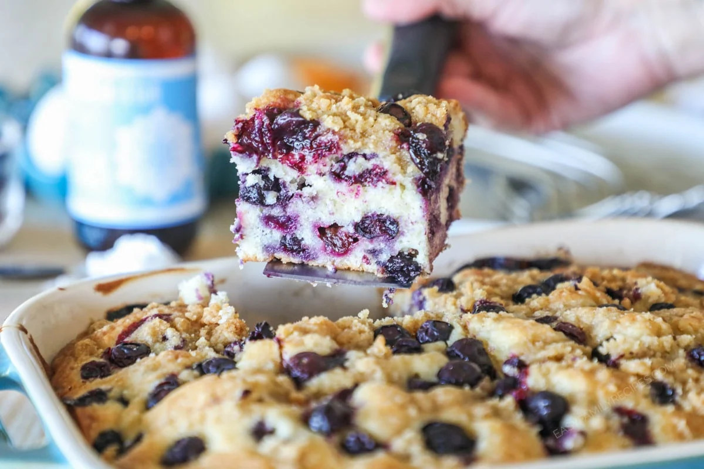

This Blueberry Breakfast Cake is an all-time favorite! It’s moist, tender, packed full of juicy, fresh blueberries. It’s perfect on its own, with your morning coffee, as part of brunch, or even as an after-dinner dessert
In a large bowl, cream together the butter and sugar. Mix in the eggs and vanilla, then stir in the buttermilk
To the wet ingredients, add in one cup of flour, salt, and baking powder. Mix together, then add in the rest of the flour. Mix until moistened.
Fold in the blueberries. In a separate bowl, make your streusel topping by mixing together softened butter, brown sugar, and flour until crumbly.
Add the prepared batter to a greased 2-quart baking dish. Spread evenly, top with prepared streusel, then bake at 350ºF for 35-45 minutes or until a toothpick comes out clean. Cool, then slice, serve, and enjoy!